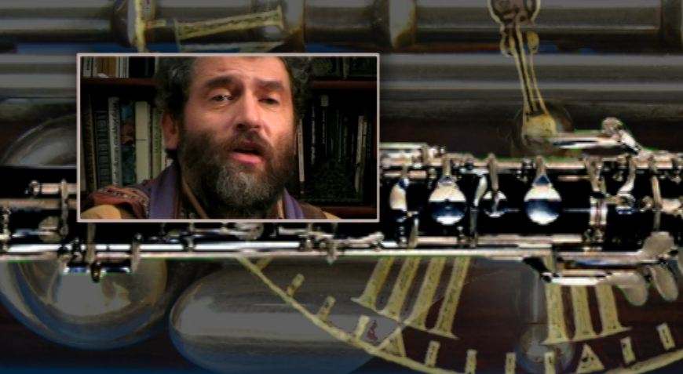
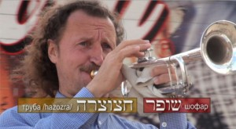
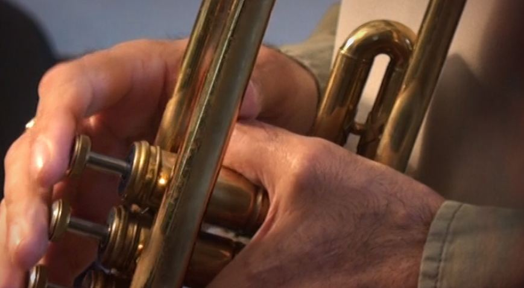

Арт-мидраш · Праздники в Библии
ГОЛОС ШОФАРА ч.1. Высокое предназначение
Этот мидраш посвящен одному из важнейших символов в еврейской традиции - шофару. Над шофаром не властно время. Этот инструмент, не утратив актуальности, и до сего дня сохраняет своё высокое предназначение.
Высокое предназначение
Впервые отцы наши услышали взывающий с небес шофар в Синайской пустыне. С тех пор его потрясающий голос сопровождает Израиля все эти годы в странах, где рассеяны евреи. Вновь и вновь вот уже более 3-х тыс.лет во всех синагогах мира трубят евреи в рог жертвенного животного, так исполняя повеление Всевышнего о празднике Трубления.
(буквальный перевод: זכרון תרועה (ивр.: зихрон труа) – воспоминание трубления шофара (Лев.23:24), или יום תרועה ивр.: йом труа – день трубления шофара (Чис.29:1)).
С тех пор, как Юваль (Быт.4:17-21) сын Лэмеха, сын Метушаеля, сын Мехояэля, сын Ирада, сын Ханоха, сын Каина сына Адамова сделался отцом всех играющих на арфе и свирели, творческим гением его потомков были рождены многие муз. инструменты. На протяжении тысячелетий искусные мастера трудились в стремлении своём найти гармонию, утраченную Адамом в Раю, и воплотить её в совершенных, причудливых музыкальных инструментах. Усложнялись их конструкции, изменились технологии, в дело шли новые материалы и даже электричество…
Но однажды явленный Аврааму шофар остаётся неизменным. Неизменен его вид и устройство, всё также неизменен его пронзительный голос, кричащий, зовущий, несущий благую весть.
Шофар и серебряные трубы. Существенные различия между ними.
Однако, в своей Библии вы не встретите инструмент под названием шофар. В большинстве переводов, в отличие от ивритского оригинала. он заменен словом «труба». Так что не делается никакой разницы между серебряной трубой и рогом для трубления, взятым от жертвенного животного. В оригинальном тексте это – хацоцра и шофар
Несомненно, между двумя этими инструментами существует сходство и некое подобие: можно сказать, и рог, и серебряная труба несут в себе личностное начало. Его содержит сам звук, извлекаемый этими духовыми инструментами. Воздух, только что наполнявший лёгкие человека и бывший частью его, минуя раструб, становится теперь голосом, передающим его чувства, эмоции, мысли…
Надо сказать, между ними есть гораздо более существенные различия: «сделай себе две серебряные трубы, чеканные сделай их», - так повелел Бог Моше. (Чис.10:1-11)



В качестве иллюстраций использованы кадры из фильма "Голос Шофара".
* Шофар – инструмент, в определенном смысле, сотворенный Самим Богом.
* Серебряные трубы – трудоёмкая, искусная работа рук человека.
* Шофар – чист по определению (т.к. взят от чистого животного, посвященного в жертву всесожжения, т.е. принадлежащего Господу полностью).
* Серебро - нуждается в переплавке и очищении от примесей. И лишь тогда становится совершенным и чистым. Человек, чтобы предстать пред Всевышним, должен очиститься подобно серебру трубы. Труба, в определенном смысле, должна была представлять человека пред Творцом.
Если же говорить о музыкальном инструменте, который представлял бы Бога, - это несомненно – шофар.
Творец обращается к своему народу трубя в шофар, т.е., через призму жертвы (ведь шофар представляет собой рог жертвенного животного).
Везде, где говорится о голосе шофара, он употребляется только в единственном числе, указывая на Творца, который один. везде в Писании голос шофара – в единственном числе, не зависимо от числа трубящих шофаров.
В сочетании (коль а-шофар) голос шофара (קול השופר) – «шофар» употребляется с определенным артиклем «hа». Этот определенный артикль указывает на единственный в своём роде инструмент, тот самый, звучащий с неба шофар, hа-шофар.

И, если, слово шофар, как правило, мы встречаем в единственном числе, то слово хацоцрот (серебряные трубы) употребляемо исключительно во множественном. (исключение составляют два случая: семь шофаров - при разрушении Иерихона И.Навином и триста - в войне под предводительством Гидеона).




Разные имена рога.
Рог, как музыкальный инструмент в оригинальном тексте (на древне еврейском языке) Библии имеет три различных имени: «керен», «шофар» и «йовель».
Это известное явление, когда одна и та же сущность имеет в Писании несколько различных имен. Сам Бог, называет Себя многочисленными именами, каждое из которых раскрывает Его характер.
Человек в иврите также имеет несколько имен. Скажем, у мужчины – их четыре:
- גֶבֶר (ивр.: гевер) - мужчина, сильный и смелый – указание на его функцию и ответственность.
- אִיש (ивр.: иш) - что значит личность (т.е., имеющий характер, волю, чувства).
- בֶּן אָדָם (ивр.: бен адам) - сын сотворенного Творцом из праха.
- זָכָר (ивр.: захар) от слова «помнить», т.е. тот, кто несет в себе генетическую память об Отце – Создателе.
В общих случаях обычно используют наиболее распространенное имя трубящего рога – шофар.
Но в специфических ситуациях в Писании шофар назвается по-разному для наиболее полного раскрытия определенных его свойств, характера его действия, послания.
Когда два, и даже все три имени рога встречаются в одном и том же эпизоде Писания, это указывает на особое, действие шофара, в случаях, когда происходят одновременно сложные сверхъестественные процессы, где каждое имя достигает своей цели, действуя при том в единстве и гармонии.
см. на эту тему также мой фильм "Голос Шофара". Студия "Тора-Арт". Композитор Даниэль Круглов
В следующей статье мы рассмотрим первое из таинственных имен шофара – керен. Имя звучащего рога, говорящее к каждому человеку.
см. также части:
* часть 2
* часть 3
***
Другие видео материалы о шофаре: исполнение заповеди трубления шофара смотрите
и здесь
автор: Эфраим Калиш /TORAART/